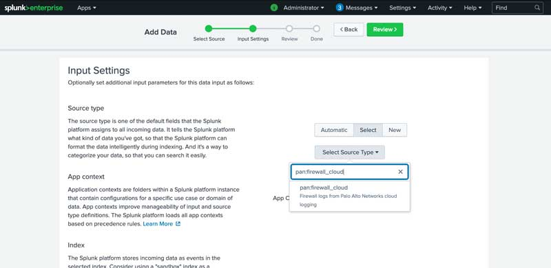
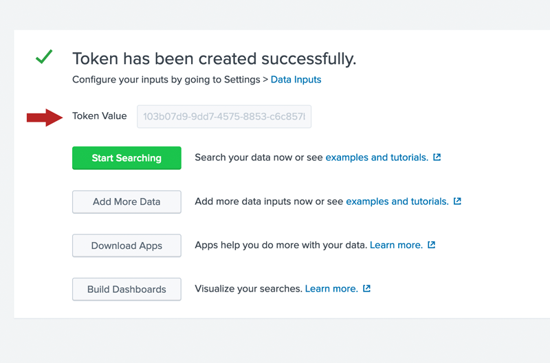

Cortex Data Lake
Send Cortex Data Lake logs to Splunk Cloud and Splunk Enterprise with HTTP Event Collector (HEC).
Cortex Data Lake logs are stored as sourcetype=pan:firewall_cloud
HTTPS / HEC is the best way to send events from Cortex Data Lake to Splunk. Syslog is not supported by Splunk Cloud and does not contain key-value pairs for field extraction. HEC is a modern Splunk protocol supported by Splunk Cloud with flexibility to send only the fields you care about to Splunk.
Create Event Collector Token in Splunk for Cortex Data Lake
Follow the guide for creating an Event Collector Token in Splunk: https://docs.splunk.com/Documentation/Splunk/latest/Data/UsetheHTTPEventCollector
Use these values when creating the token:

| Field | Value |
|---|---|
| Source type | pan:firewall_cloud |
Be sure to save your token value. You will need it when configuring HTTP forwarding from Cortex Data Lake.

Setup HTTP forwarding from Cortex Data Lake
Use the instruction in the Forward Logs from Cortex Data Lake to an HTTPS Server guide: